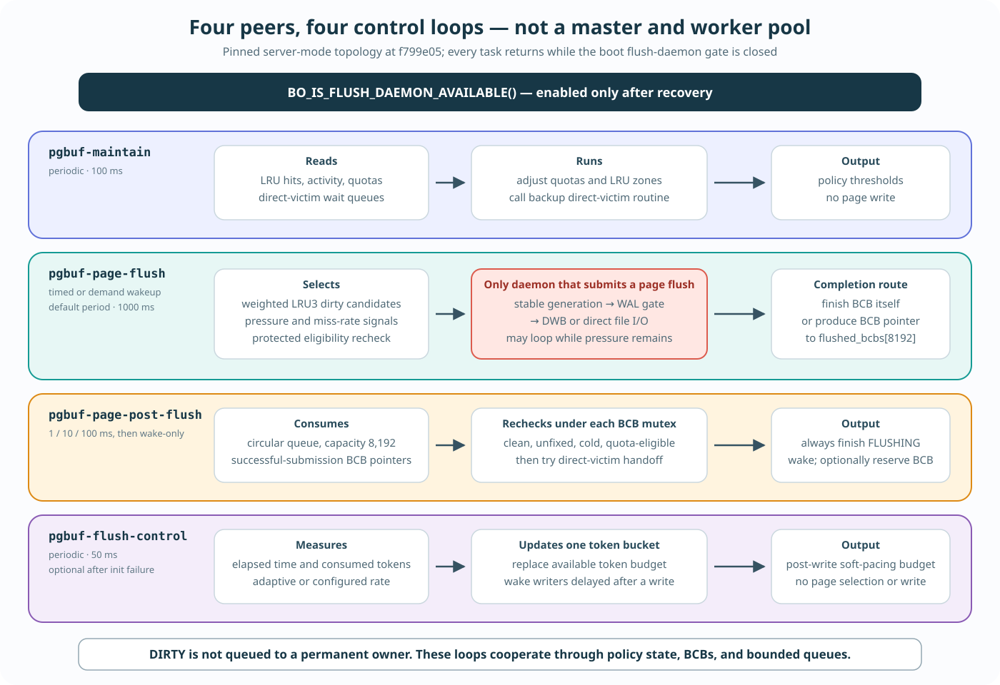

Process 하나, 동등한 thread 네 개, 서로 다른 작업 네 개

Boot gate는 네 task를 모두 막거나 엽니다. 초록색 page-flush 행만 page-generation flush mechanism으로 들어갑니다.
Dirty page를 네 worker 중 하나에게 배정하지 않습니다. DIRTY는 selection policy 또는 explicit caller가 행동할 때까지 BCB state로 남습니다.
pgbuf_daemons_init()는 역할마다 daemon object 하나를 만듭니다. 각 object가std::thread하나를 소유합니다.- Task를 실행하고, 각자 가진
cubthread::looper규칙에 따라 쉬었다가 다시 실행합니다. 네 worker가 함께 소비하는 공통 dirty-page work queue는 없습니다. - Restart 과정에서 object를 만들지만
BO_IS_FLUSH_DAEMON_AVAILABLE()이 false이면 task가 즉시 돌아옵니다. Boot는 recovery 뒤에만 gate를 엽니다. pgbuf-flush-control은 선택적입니다. Token-bucket 초기화가 실패하면 daemon pointer가 null로 남습니다. Stand-alone mode는 네 daemon 모두 만들지 않습니다.
Trigger → input → work → output 순서로 묻습니다
| Daemon | 실행 시점 | 접근 대상 | 결과 | Page flush 시작? |
|---|---|---|---|---|
pgbuf-maintain | 100 ms마다 | LRU hit/activity sample, quota, zone boundary, direct-victim state | Replacement-policy target을 갱신하고 의도상 backup assignment routine을 호출 | 아니요 |
pgbuf-page-flush | 요청이 오거나 page_bg_flush_interval_msecs마다. 기본 1,000 ms | LRU3 candidate, flush priority, BCB state, WAL state, pressure signal | Demand wake는 iteration 하나를 강제하지만 timer wake는 아무 일도 안 할 수 있음. Dirty cold generation을 제출하고 pressure가 남으면 계속 실행 | 예 |
pgbuf-page-post-flush | Page-flush handoff wake. Idle pause는 1/10/100 ms로 늘어난 뒤 wake-only | flushed_bcbs, BCB state, direct-victim/BCB flush-waiter queue | 이전 FLUSHING state를 끝내고 flush waiter를 깨우며 이제 clean인 BCB를 allocator에게 reserve할 수 있음 | 새 write 없음 |
pgbuf-flush-control | 초기화 성공 뒤 50 ms마다 | File-I/O token bucket, elapsed time, 관측/소비 token 통계 | Token budget을 교체하고 rate-control waiter를 깨움 | 아니요 |
pgbuf-page-flush는 page-buffer flush submission을 시작합니다. DWB가 켜져 있으면 같은 thread에서 home-volume write를 끝내는 대신 stable image를 downstream DWB 작업에 넣는 것일 수 있습니다.Page flush가 completion을 post-flush에 넘길 수 있습니다
allocation pressure / timed wake
→ pgbuf-page-flush
→ choose dirty LRU3 candidates
→ recheck identity + dirty + cold + unfixed + WAL
→ copy generation and submit DWB/direct I/O
→ if a direct-victim waiter exists and flushed_bcbs accepts the pointer:
produce BCB* → wake pgbuf-page-post-flush
else:
complete FLUSHING state in this thread
pgbuf-page-post-flush
→ drain flushed_bcbs (capacity 8,192)
→ lock each BCB and recheck clean + unfixed + LRU3 + quota
→ reserve for one waiting allocator when still eligible
→ clear old FLUSHING state and wake flush waitersPost-flush가 “모든 flush의 후반부”를 수행하는 것은 아닙니다. Page-flush 경로이고, direct-victim waiter가 있고, post-flush daemon이 존재하고, bounded queue가 pointer를 받아들일 때만 handoff합니다. 나머지는 submit한 thread가 직접 BCB를 완료합니다.
Protected recheck가 반드시 필요합니다. I/O submission과 post-processing 사이에 다른 thread가 BCB를 fix하거나 LRU3 밖으로 옮기거나 더 새로운 DIRTY generation을 만들 수 있습니다. 이전 generation의 completion이 더 새로운 resident byte의 reuse를 허가해서는 안 됩니다.
Quota adjustment는 실행되지만 backup assignment loop에는 anomaly가 있습니다
Maintenance 실행은 먼저 pgbuf_adjust_quotas()를 호출합니다. Per-LRU hit sample을 소비하고, private activity를 추정하며, private/shared threshold를 갱신하고, threshold를 넘은 zone을 demote하며, candidate를 가진 LRU를 다시 publish하고, approximate “victim rich” signal을 갱신합니다.
그다음 pgbuf_direct_victims_maintenance()를 호출합니다. Comment는 이를 low-activity backup이라고 설명합니다. 초기값 5는 strict assignment cap이 아니라 outer continuation budget입니다. Helper call 한 번이 LRU3 entry를 최대 1,000개 검사하고 BCB 여러 개를 assign할 수 있습니다. 그러나 pinned outer for loop 둘은 index를 저장된 시작 index로 초기화하고 즉시 index != start_index를 요구합니다. 첫 검사부터 false라서 작성된 그대로라면 두 body 모두 실행되지 않습니다.
BCB가 아니라 token을 관리합니다
Flush-control task는 page-buffer daemon과 함께 생성되지만 state는 file_io.c에 있습니다. 첫 실행은 time origin만 기록합니다. 이후 50 ms마다 adaptive 또는 configured token rate를 계산하고, shared token budget을 교체하고, interval 통계를 reset하고, token-bucket condition variable을 broadcast합니다. Non-log caller는 열 번의 broadcast/retry 뒤에는 기다림을 끝내고, log critical section을 가진 caller는 부족한 token을 기다리지 않으므로 soft limiter입니다.
File-I/O path는 OS write call 뒤 fileio_compensate_flush()에서 이 budget을 소비합니다. 따라서 기다림은 다음 progress를 늦춥니다. 방금 끝난 write 전에 permission을 주는 token이 아닙니다. 이 pacing path는 dirty page를 고르거나 FLUSHING을 설정하거나 byte를 복사하거나 WAL을 force하거나 page-generation flush mechanism을 호출하지 않습니다. 초기화 실패로 daemon이 없으면 bucket pointer가 null이므로 token acquisition이 no-op이 되지만 page flushing은 계속 존재합니다.
의도적으로 I/O-bound인 것은 page-flush loop뿐입니다
| Loop | Wait/I/O 전 CPU-side bound | Wall time을 지배할 수 있는 요소 |
|---|---|---|
| Maintenance | Thread counter shard, 모든 LRU descriptor, zone demotion에 O(T + S + P + D) | LRU mutex contention. VS-20 때문에 의도한 assignment scan은 실행 비용에 포함하지 않음 |
| Page flush | O(T + S + P + K + C log C + C·N). Base scan budget은 200 MiB 분량 page 수로 제한되지만 positive-priority LRU마다 최소 하나를 검사하므로 그 LRU 수만큼 더해질 수 있음 | BCB contention, WAL wait, DWB, file I/O, scheduling |
| Post-flush | O(Q + stale direct waiter + scan한 모든 BCB flush waiter). Capacity 8,192는 backlog bound이지 concurrent refill 중 drain bound가 아님 | BCB/thread mutex와 queue CAS contention |
| Flush control | O(1) accounting과 condition broadcast | 깨어난 waiter 수와 scheduler behavior |
T는 managed thread 수, S/P는 shared/private LRU 수, D는 zone demotion 수, K는 검사한 LRU node, C는 candidate, N은 neighbor span, Q는 drain한 post-flush entry 수입니다. Big-O는 structure traversal을 뜻하며 elapsed latency가 아닙니다.
Checkpoint, WRITE owner, explicit caller, DWB는 별도 actor입니다
- Log-checkpoint thread는
oldest_unflush_lsa로 page를 선택하고 직접pgbuf_flush_checkpoint()를 호출합니다. - Foreground storage, recovery, shutdown, volume operation은 page 하나 또는 whole-pool flush를 synchronous하게 호출할 수 있습니다.
- Foreign WRITE owner는
PGBUF_BCB_ASYNC_FLUSH_REQ를 받고 unfix 시점에 safe copy를 수행할 수 있습니다. - DWB의 선택적인 flush-block/file-sync daemon은 downstream storage-integrity helper이지 page-buffer daemon worker가 아닙니다.
Debug할 때는 두 가지를 물어야 합니다. 이 generation을 누가 선택했는가? Configured persistence boundary를 어떤 thread가 실행하거나 완료했는가?
네 증상을 네 owner에게 route합니다
문제
서버에서 allocator wait가 많고, dirty-page write가 잦고, file-I/O pacing wait도 보입니다. 어떤 daemon이 어떤 progress를 담당하는지, page-flush와 post-flush가 어떻게 연결되는지, 왜 네 daemon을 모두 깨우는 것이 올바른 수정이 아닌지 설명하세요.
각 loop를 initializer부터 추적합니다
- Daemon task, period, initialization, destruction.
- Victim candidate collection과 page-flush submission.
- Maintenance direct-victim loop condition과 post-flush recheck/handoff.
- File-I/O token-bucket control과 post-write call order.